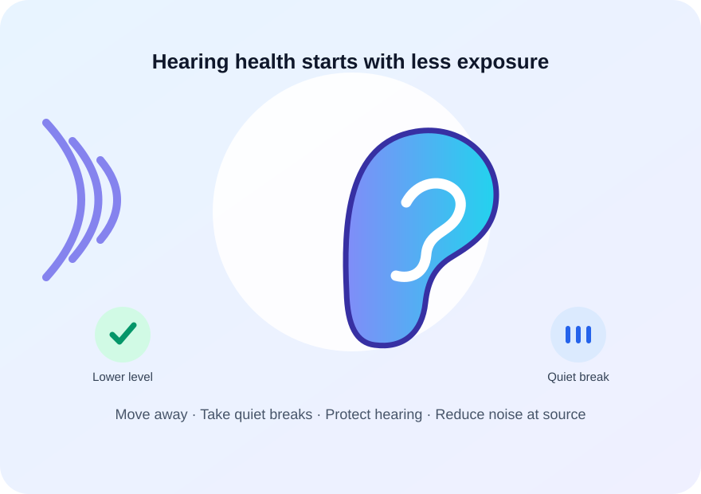

Hearing and tinnitus
Loud noise can damage hearing; tinnitus is ringing, buzzing, or similar sound without an outside source. Noise-induced hearing loss can be permanent.
WHO safe-listening guidance ↗Dashboard / Awareness
Understand how repeated loud exposure can damage hearing, learn simple ways to reduce risk, and find trusted help.
Very loud sounds can injure the inner ear in one event. Repeated exposure to loud sound can damage sensory structures over time and may cause permanent hearing loss or tinnitus. Risk depends on both sound level and time exposed.

Health outcomes depend on the type of noise and exposure. Avoid assuming every effect applies to every person.
Loud noise can damage hearing; tinnitus is ringing, buzzing, or similar sound without an outside source. Noise-induced hearing loss can be permanent.
WHO safe-listening guidance ↗Environmental noise is associated with sleep disturbance and annoyance. WHO summaries also describe links with cardiovascular and cognitive health outcomes.
WHO environmental-noise overview ↗Noise can mask alarms, warnings, and conversation, which may make it harder to notice hazards or coordinate with others.
CDC/NIOSH prevention guide ↗Videos are hosted by CDC/NIOSH. Use the controls to play; captions and transcripts are available from the original source where provided.
CDC/NIOSH overview for workers on noise hazards and practical hearing-loss prevention.
Open CDC/NIOSH article and transcript ↗CDC/NIOSH guidance for managers on reducing hazardous noise at work.
Open CDC/NIOSH prevention resources ↗Increase distance from the source and choose quieter routes or rooms when possible.
Take quiet breaks and limit time around loud activities. Louder sound generally means less safe exposure time.
Use suitable, correctly fitted hearing protection for unavoidable loud work or events. Follow product instructions.
For workplaces and communities, address the source, maintenance, barriers, scheduling, and quieter equipment.
For sudden hearing loss, severe ear pain, or distressing symptoms after a loud event, seek prompt advice from a qualified health professional. This site does not diagnose or replace clinical care.
Estimate an illustrative daily noise dose using the NIOSH 3 dB exchange-rate model. This is for learning only: it is not a medical assessment, measurement, or legal compliance result.
Keep a factual log: dates, start/end times, location area, type of source, pattern, and any steps tried. Do not put yourself at risk to collect evidence.
How loudness, duration, and repeated exposure affect hearing.
Visit WHO ↗Practical tips for protecting hearing from loud sound.
Visit CDC ↗Validated iOS workplace sound meter details and limitations.
Visit NIOSH ↗Noise readings from this SmartNoise prototype are not calibrated sound-level measurements. Do not use them to diagnose hearing risk, prove a violation, or substitute for a certified instrument.